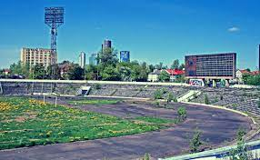
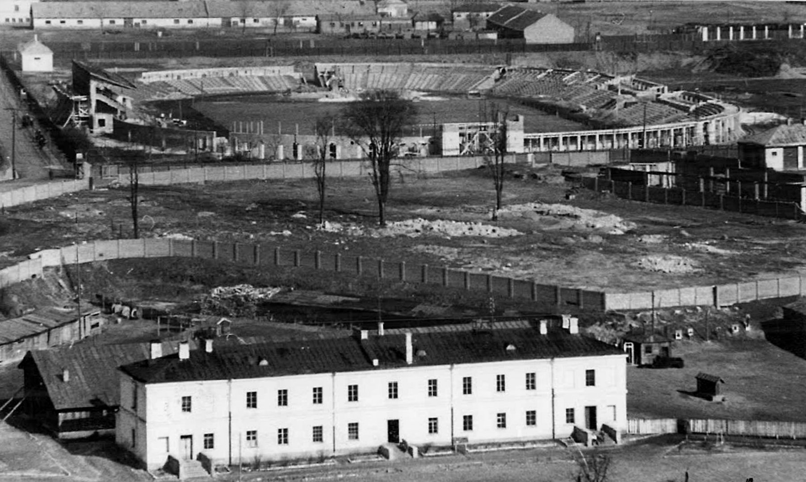

Futbolo ateitis...

Futbolo ateitis
Diskutuojant buvo iškeltas opus valstybinėse sporto gimnazijose egzistuojantis trenerių tarifikavimo,
susiejant atlyginimą su vadovaujamos komandos rezultatais, klausimas. Sporto treneriai Kūno kultūros ir sporto departamentui turi pateikti varžybų protokolus su auklėtinių rezultatais,
nuo jų priklauso trenerių vertinimas – tarifikacija: kategorija ir gaunamas atlygis.
E. Jankauskas stebėjosi, kodėl šis klausiamas nėra sprendžiamas, nors apie tai ne kartą buvo kalbėta Kūno ir kultūros sporto departamente.
„Situacija nesikeičia. Einama to link, kad futbolas neaugtų, vis atsimušam į kažkokius kraštutinius dalykus.
Nenorima atiduoti gabesnių vaikų iš regionų, nes tuomet treneris prarastų savo atlyginimą“, – susierzinimo neslėpė futbolo rinktinės treneris.

Istorija
Pirmąsias oficialias rungtynes Lietuvos nacionalinė futbolo rinktinė sužaidė 1923 m. birželio 24 d. su Estijos komanda
ir jas pralaimėjo rezultatu 0:5 (sudėtis: vartininkas Steponas Darius, gynėjai Dveringas, Gvildys, saugai Juozapaitis, Bartuška, Razma, puolėjai Varšukas, Baueris, Kiegas, Kunelis, Garbačiauskas).
Pirmoji pergalė buvo iškovota 1924 m. rugpjūčio 24 d., kai Taline rezultatu 2:1 buvo nugalėta ta pati Estijos rinktinė. Vėliau Lietuva reguliariai žaidė tarptautines futbolo varžybas iki pat TSRS okupacijos 1940 m.
Iš viso per šį laikotarpį Lietuvos rinktinė sužaidė 69 oficialiais rungtynes, iš kurių 14 laimėjo, 12 sužaidė lygiosiomis ir 43 pralaimėjo.